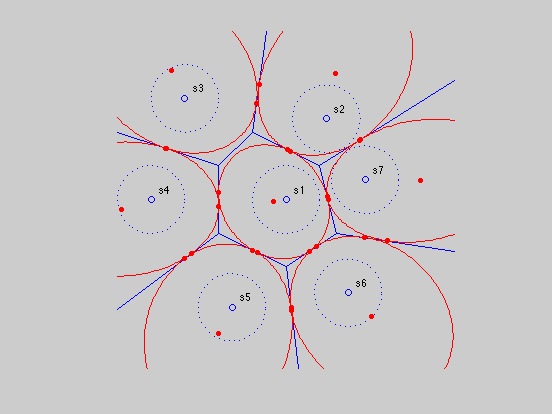
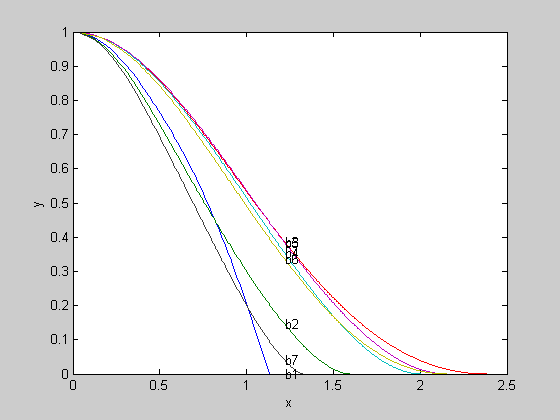

Section 7.4.3: Probability bounds example with Voronoi diagram
randn('state',1);
rand('state',0);
Vs = [ 1 1 ; -1 2 ; -2 1 ; -2 -1 ; 0 -2 ; 1.5 -1 ; 1 1 ]';
nopts = size( Vs, 2 );
m = nopts - 1;
As{1} = zeros(m,2);
bs{1} = zeros(m,1);
Cs = zeros( 2, nopts );
for i=1:m
As{1}(i,:) = [-(Vs(2,i)-Vs(2,i+1)) Vs(1,i)-Vs(1,i+1)];
bs{1}(i) = As{1}(i,:)*Vs(:,i);
Cs(:,i+1)= 2* bs{1}(i)* As{1}(i,:)'/norm(As{1}(i,:))^2;
end;
figure(1)
plot([Vs(1,:) Vs(1,m)], [Vs(2,:), Vs(2,m)], '-', Cs(1,:), Cs(2,:), 'o');
hold on
for i=1 : nopts,
noangles = 1000;
text( Cs(1,i)+0.25, Cs(2,i)+0.25, [ 's_', int2str(i) ] );
angles = linspace( 0, 2*pi, noangles );
R = 1;
ellipse = R * [ cos(angles) ; sin(angles) ] + Cs(:,i) * ones(1,noangles);
plot( ellipse(1,:), ellipse(2,:), ':' );
end;
As{2} = [-As{1}(1,:);
(Cs(:,m+1) - Cs(:,2))';
(Cs(:,3) - Cs(:,2))'];
bs{2} = [-bs{1}(1);
As{2}(2,:)*(Cs(:,m+1)+Cs(:,2))/2;
As{2}(3,:)*(Cs(:,3)+Cs(:,2))/2];
v = Vs(:,1);
dir = (Cs(:,m+1)+Cs(:,2))/2 - v;
plot( [v(1) v(1) + 5*dir(1)], [v(2) v(2) + 5*dir(2)], '-');
v = Vs(:,2);
dir = (Cs(:,3)+Cs(:,2))/2 - v;
plot( [v(1) v(1) + 5*dir(1)], [v(2) v(2) + 5*dir(2)], '-');
for i=3:nopts-1
As{i} = [-As{1}(i-1,:);
(Cs(:,i-1) - Cs(:,i))';
(Cs(:,i+1) - Cs(:,i))'];
bs{i} = [-bs{1}(i-1);
As{i}(2,:)*(Cs(:,i-1)+Cs(:,i))/2;
As{i}(3,:)*(Cs(:,i+1)+Cs(:,i))/2];
v = Vs(:,i-1);
dir = (Cs(:,i-1)+Cs(:,i))/2 - v;
plot( [v(1) v(1) + 4*dir(1)], [v(2) v(2) + 4*dir(2)], '-');
v = Vs(:,i);
dir = (Cs(:,i+1)+Cs(:,i))/2 - v;
plot( [v(1) v(1) + 4*dir(1)], [v(2) v(2) + 4*dir(2)], '-');
end;
As{nopts} = [-As{1}(nopts-1,:);
(Cs(:,nopts-1) - Cs(:,nopts))';
(Cs(:,2) - Cs(:,nopts))'];
bs{nopts} = [-bs{1}(nopts-1);
As{nopts}(2,:)*(Cs(:,nopts-1)+Cs(:,nopts))/2;
As{nopts}(3,:)*(Cs(:,2)+Cs(:,nopts))/2];
v = Vs(:,nopts-1);
dir = (Cs(:,nopts-1)+Cs(:,nopts))/2 - v;
plot( [v(1) v(1) + 6*dir(1)], [v(2) v(2) + 6*dir(2)], '-');
v = Vs(:,1);
dir = (Cs(:,2)+Cs(:,nopts))/2 - v;
plot( [v(1) v(1) + 6*dir(1)], [v(2) v(2) + 6*dir(2)], '-');
axis('equal');
axis(5*[-1 1 -1 1]);
axis off
A = As{1};
b = bs{1} - A*Cs(:,1);
[cd_cheb,P,q,r, X,lambda] = cheb(A,b,eye(2));
noangles = 500;
angles = linspace(0,2*pi, noangles);
pts = [cos(angles); sin(angles)];
ellipse = sqrt(1-r+q'*(P\q)) * P^(-1/2)*pts + ...
(-P\q + Cs(:,1))*ones(1,noangles);
plot(ellipse(1,:), ellipse(2,:), 'r-');
dots= plot(X(1,:), X(2,:), 'ro');
set(dots,'MarkerFaceColor','red');
set(dots,'MarkerSize',4);
hold off
nosigmas = 100;
sigmas = linspace( 0.001, 6.0, nosigmas )';
cd_cheb = zeros( nosigmas, nopts );
cvxq = cvx_quiet( true );
fprintf( 'Computing lower bounds' );
for k=1 : nosigmas,
for i = 1 : 3,
A = As{i};
b = bs{i} - A*Cs(:,i);
cd_cheb(k,i) = cheb( A, b, sigmas(k) * eye(2) );
end;
if rem( k, 10 ) == 0,
fprintf( '.' );
end
end;
fprintf( 'done.\n' );
cvx_quiet( cvxq );
figure(2)
plot(sqrt(sigmas(:,ones(1,3))), cd_cheb(:,[1 2 3]));
for i = 1 : 3,
text( sqrt(sigmas(nosigmas/4)), cd_cheb(nosigmas/4,i), ['b',int2str(i)] );
end;
xlabel('x');
ylabel('y');
axis([0 2.5 0 1]);
nosigmas = 50;
sigmas = linspace( 0.1, 0.5, nosigmas);
cd1 = zeros( 1, nosigmas );
mc1 = zeros( 1, nosigmas );
cher1 = zeros( nopts-1, nosigmas );
cvxq = cvx_quiet( true );
fprintf( 'Computing upper bounds, lower bounds, and Monte Carlo sims' );
for i = 1 : nosigmas,
A = As{1};
b = bs{1} - A*Cs(:,1);
Sigma = sigmas(i) ^ 2 * eye(2);
cd1(i) = cheb( A, b, Sigma );
mc1(i) = montecarlo( A, b, Sigma, 10000 );
for j=2:nopts
A = As{j};
b = bs{j} - A*Cs(:,1);
cher1( j-1, i ) = cher( A, b, Sigma );
end;
if rem( i, 5 ) == 0,
fprintf( '.' );
end
end;
cher1 = max( 1 - sum( cher1 ), 0 );
cvx_quiet( cvxq );
fprintf( 'done.\n' );
figure(4)
plot(sigmas, cher1, '-', sigmas, mc1, '--');
axis([0.2 0.5 0.9 1]);
xlabel('x');
ylabel('y');
Calling SeDuMi: 48 variables (0 free), 36 equality constraints
------------------------------------------------------------------------
SeDuMi 1.1 by AdvOL, 2005 and Jos F. Sturm, 1998, 2001-2003.
Alg = 2: xz-corrector, Adaptive Step-Differentiation, theta = 0.250, beta = 0.500
eqs m = 36, order n = 28, dim = 70, blocks = 8
nnz(A) = 89 + 0, nnz(ADA) = 856, nnz(L) = 583
it : b*y gap delta rate t/tP* t/tD* feas cg cg prec
0 : 3.22E+000 0.000
1 : 6.16E-001 1.09E+000 0.000 0.3386 0.9000 0.9000 2.78 1 1 1.6E+000
2 : 8.11E-001 2.05E-001 0.000 0.1875 0.9000 0.9000 1.96 1 1 2.3E-001
3 : 7.97E-001 3.96E-002 0.000 0.1936 0.9000 0.9000 0.90 1 1 5.0E-002
4 : 7.95E-001 8.61E-003 0.000 0.2172 0.9000 0.9000 0.93 1 1 1.1E-002
5 : 7.95E-001 2.49E-004 0.000 0.0289 0.9900 0.9900 0.98 1 1 3.4E-004
6 : 7.95E-001 2.82E-006 0.329 0.0113 0.9903 0.9900 1.00 1 1 6.4E-006
7 : 7.95E-001 2.38E-007 0.000 0.0844 0.9090 0.9000 1.00 1 1 7.7E-007
8 : 7.95E-001 1.82E-008 0.487 0.0767 0.9900 0.9900 1.00 1 1 6.1E-008
9 : 7.95E-001 4.26E-010 0.000 0.0234 0.9900 0.9192 1.00 2 2 4.6E-009
iter seconds digits c*x b*y
9 0.1 Inf 7.9523809994e-001 7.9523810301e-001
|Ax-b| = 2.6e-009, [Ay-c]_+ = 2.7E-009, |x|= 4.0e+000, |y|= 1.4e+000
Detailed timing (sec)
Pre IPM Post
1.001E-002 9.013E-002 0.000E+000
Max-norms: ||b||=1, ||c|| = 1,
Cholesky |add|=0, |skip| = 0, ||L.L|| = 24.9735.
------------------------------------------------------------------------
Optimal value (cvx_optval): +0.204762
Status (cvx_status): Solved
Computing lower bounds..........done.
Computing upper bounds, lower bounds, and Monte Carlo sims..........done.
 